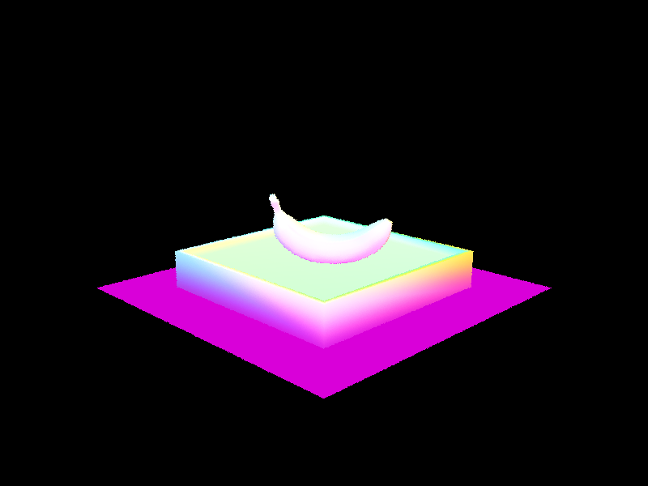

CS184/284A Spring 2025 Homework 3 Write-Up
Link to webpage: https://cal-cs184-student.github.io/hw-webpages-aether/hw3/index.html
Link to GitHub repository: https://github.com/cal-cs184-student/sp25-hw3-fractals

Overview
In this assignment, we built a full-featured path tracer by implementing core components of the rendering pipeline. In Part 1, we implemented ray generation using camera field of view and coordinate transforms, and handled primitive intersection using the Möller-Trumbore algorithm for triangles. In Part 2, we accelerated ray-scene intersections using a bounding volume hierarchy (BVH), constructing the BVH with a median-split heuristic and achieving significant speedups. Part 3 focused on direct illumination, where we used Monte Carlo integration to implement both uniform hemisphere and importance sampling, comparing their effects on noise and convergence. In Part 4, we extended the renderer to support global illumination through recursive indirect lighting, optionally using Russian Roulette to probabilistically terminate paths and reduce ray count. In Part 5, we implemented adaptive sampling by statistically estimating the pixel luminance confidence interval and halting sampling early for converged pixels, optimizing rendering time.
Throughout this project, we gained deep insight into the ray tracing pipeline, physically based rendering, acceleration structures, and sampling theory — all culminating in a renderer capable of producing realistic images with complex lighting behavior.
Part 1: Ray Generation and Scene Intersection
Walk through the ray generation and primitive intersection parts of the rendering pipeline.
In the ray generation stage of the rendering pipeline, we begin by calculating the bounds of the virtual camera sensor using the camera's horizontal and vertical field of view. Each pixel's normalized coordinates are mapped to a point on this sensor plane, and a ray is generated from the camera's origin through that point. This ray, initially in camera space, is transformed into world space using a camera-to-world rotation matrix, and its direction is normalized. For each pixel, multiple sample rays are generated using uniform sampling, and their radiance is averaged.
In the primitive intersection stage, these rays are tested against objects in the scene. For triangles and spheres, we implement intersection functions that either detect whether a ray intersects an object or compute detailed intersection data such as the point and surface normal. These routines are based on geometric algorithms discussed in lectures and are essential for determining the nearest surface a ray hits, which in turn is used to shade the pixel appropriately.
Explain the triangle intersection algorithm you implemented in your own words.
We implemented the Möller-Trumbore algorithm to test for ray-triangle intersections. The algorithm computes edge vectors from the triangle's vertices and uses the ray's direction \(d\) and origin \(o\) to solve for the intersection point in terms of variables \(b_1, b_2, t\) that satisfy the following equation: \[ o + td = (1 - b_1 - b_2)p_0 + b_1p_1 + b_2p_2 \] If the ray is nearly parallel to the triangle, no intersection is found. Otherwise, we verify that the point lies within the triangle by ensuring \(b_1\), \(b_2\), and \(1 - b_1 - b_2\) are all between 0 and 1. If valid, the intersection info is updated with the hit point, interpolated normal, and surface material.
Show images with normal shading for a few small .dae files.

|

|
Part 2: Bounding Volume Hierarchy
Walk through your BVH construction algorithm. Explain the heuristic you chose for picking the splitting point.Our BVH construction algorithm is recursive and follows two main cases:
-
Base case: When the number of primitives in the current range is less than or equal to
max_leaf_size, we construct a leaf node. We compute the bounding box that encloses all the primitives by expanding it to include each primitive's bounding box. This node becomes a leaf by setting its left and right children toNULL, and it stores the range of primitives fromstarttoend. -
Recursive case: When the number of primitives exceeds
max_leaf_size, we need to split them. To do this, we compute the bounding box of the centroids of all primitives and determine the axis with the largest extent. We then use this axis to sort the primitives by their centroid coordinates and split them at the median usingstd::nth_element. This gives us a balanced split and ensures spatial coherence. We recursively construct the left and right child nodes using the two resulting halves.
This splitting heuristic—median split along the axis with the greatest centroid spread—helps create a well-balanced BVH while preserving spatial locality, leading to more efficient ray traversal during rendering.
Show images with normal shading for a few large .dae files that you can only render with BVH acceleration.

|

|

|

|
Compare rendering times on a few scenes with moderately complex geometries with and without BVH acceleration. Present your results in a one-paragraph analysis.We observed dramatic reductions in render times when using BVH acceleration, with performance gains often exceeding two orders of magnitude. Without BVH, rays must test against every primitive, resulting in intersection test counts that scale linearly with the number of primitives. With BVH, we allow rays to skip large portions of the scene and perform significantly fewer intersection tests, leading to logarithmic scaling. Interestingly, one of the more detailed scenes,
lucy.png, rendered faster than simpler ones, likely due to its compact geometry that results in a lot of early stopping in the presence of intersections.
| Scene | Number of Primitives | Render time (no BVH) | Render time (BVH) | Average intersection tests per ray (no BVH) | Average intersection tests per ray (BVH) |
|---|---|---|---|---|---|
| cow.png | 5856 | 37.4068s | 0.1962s | 5856.0 | 3.988194 |
| lucy.png | 133796 | 798.0661s | 0.1263s | 133796.0 | 2.663512 |
| wall-e.png | 240326 | N/A | 0.3123s | 240326.0 | 6.701698 |
Part 3: Direct Illumination
Walk through both implementations of the direct lighting function.
Direct lighting consists of two parts: zero-bounce illumination and one-bounce illumination. Zero-bounce refers to light emitted directly from a surface, which can be computed by checking whether the intersected surface is emissive; if so, we return its emission value as the contribution to the final radiance.
In one-bounce illumination, we account for light that reflects off other surfaces before reaching the camera. This requires estimating how much light arrives at a surface point from various directions in the scene and is then reflected towards the camera. We use Monte Carlo integration to approximate this by sampling a set of incoming directions and computing the corresponding reflected radiance.
Uniform Hemisphere Sampling
Our first strategy for estimating one-bounce illumination is uniform hemisphere sampling.
- Given an outgoing ray \(r_1\) and its intersection point \(i_1\), we sample a new ray \(r_2\) from the hemisphere centered around the surface normal at \(i_1\).
- We test whether \(r_2\) intersects the scene. If it does not, we contribute zero radiance. If it does intersect another point in the scene, we compute the incoming radiance along \(r_2\) and scale it by the BSDF, \(\cos(\theta_j) / p(r_2)\), where \(\theta_j\) is the angle between \(r_2\) and the surface normal, and divide by the PDF of sampling \(r_2\).
- This result is recorded as a sample of reflected light, and we take the average across all such samples to estimate the integral.
Importance Sampling
The second approach is importance sampling to improve efficiency by reducing variance. Instead of sampling rays uniformly over the hemisphere, we sample rays that directly target points on the light sources. For each light source, we:
- Sample a point on the light and generate a ray toward it from the surface intersection point.
- Check whether the ray is blocked by another object.
- If not blocked, we compute the radiance contribution as before, but the PDF is based on the area of the light and the sampling distribution used for the light source.
Since the samples are focused toward directions that are more likely to contribute light, this strategy converges faster than uniform sampling.
Show some images rendered with both implementations of the direct lighting function.
| Uniform Hemisphere Sampling | Importance Sampling |
|---|---|

|

|

|

|
Focus on one particular scene with at least one area light and compare the noise levels in soft shadows when rendering with 1, 4, 16, and 64 light rays (the -l flag) and with 1 sample per pixel (the -s flag) using light sampling, not uniform hemisphere sampling.

|

|

|

|
These four images demonstrate the effect of increasing the number of light samples in importance sampling on rendering quality. The top-left image, rendered with only 1 light sample per intersection, exhibits significant noise and graininess, especially on the floor and shadowed areas. As the number of light rays increases to 4 (top-right), 16 (bottom-left), and 64 (bottom-right), the noise decreases dramatically, resulting in smoother shadows, more accurate lighting, and greater color consistency. The progression clearly shows how higher light sampling improves convergence toward a realistic image by better approximating the contribution of the light source at each point.
Compare the results between uniform hemisphere sampling and lighting sampling in a one-paragraph analysis.
Uniform hemisphere sampling selects directions randomly from the hemisphere around the surface normal, which can lead to high variance and noisy renders, especially when many sampled directions miss the light sources entirely. This is particularly problematic for point light sources, which occupy an infinitesimally small area—making it extremely unlikely that a randomly sampled direction will hit them, as seen in CBdragon.dae. In contrast, importance sampling directly targets light sources, dramatically increasing the chances that each sample contributes meaningful illumination. As a result, pixels are more likely to receive light in each sample, reducing noise and improving convergence. This makes importance sampling especially effective in scenes with small or concentrated light sources, producing smoother and more accurate lighting with fewer samples.
Part 4: Global Illumination
Walk through your implementation of the indirect lighting function.
The indirect lighting function is implemented recursively by tracing rays that bounce off surfaces and gather light from other parts of the scene. Given a ray \(r_1\) that intersects the scene at point \(i_1\), we estimate the light reflected from subsequent bounces by doing the following:
- Check the ray's remaining depth. If it is one, we stop the recursion and return one-bounce illumination.
- Convert the world-space incoming direction to the object's local space using an orthonormal basis at the surface normal.
- Use the BSDF at the intersection point to sample an incoming direction \(w_2\) over the hemisphere and retrieve the BSDF value and sampling probability \(pdf\).
- Transform the sampled direction back to world space and trace a new ray \(r_2\) in that direction, offset slightly to avoid self-intersection.
- If \(r_2\) hits another surface, recursively call the same function to compute the indirect lighting at the new intersection.
- Scale the returned radiance by the BSDF, cosine term, and inverse of the pdf, and accumulate it as the total indirect illumination for \(r_1\).
This approach does not use Russian Roulette; instead, the recursion is simply limited by the maximum ray depth defined in the scene configuration. With Russian Roulette, we probabilistically terminate some paths based on a continuation probability \(p_{cont}\), and scale the contribution of surviving rays accordingly by dividing by \(p_{cont}\) to maintain an unbiased estimate while improving efficiency at higher depths.
Show some images rendered with global (direct and indirect) illumination. Use 1024 samples per pixel.

|

|
Pick one scene and compare rendered views first with only direct illumination, then only indirect illumination. Use 1024 samples per pixel.

|

|
Compare rendered views of accumulated and unaccumulated bounces for CBbunny.dae with max_ray_depth set to 0, 1, 2, 3, 4, and 5 (the -m flag). Use 1024 samples per pixel. Explain in your write-up what you see for the 2nd and 3rd bounce of light, and how it contributes to the quality of the rendered image compared to rasterization.
| Accumulated Bounces | Unaccumulated Bounces |
|---|---|

|

|

|

|

|

|

|

|

|

|

|

|
When rendering CBbunny.dae with isAccumBounces=false and increasing the max_ray_depth from 0 through 5 using the -m flag, we isolate each bounce of indirect lighting. The 0th bounce captures only the light emitted directly from surfaces (zero-bounce), while the 1st bounce introduces direct lighting from light sources hitting visible surfaces.
The 2nd bounce reveals light that has reflected once off another surface before reaching the visible point, introducing soft lighting near walls and floors. This bounce significantly enhances global illumination and contributes to the overall realism by adding ambient effects that rasterization cannot simulate.
By the 3rd bounce, these soft light contributions deepen. The scene becomes more evenly lit, particularly in occluded or recessed areas that are poorly illuminated in the first two bounces. This compounding of indirect lighting is one of the key benefits of path tracing over rasterization, which cannot easily represent this nuanced color bleeding.
Comparing the accumulated and unaccumulated bounces, we can see that the accumulated bounces produce a more natural and photorealistic image, with each additional bounce adding illumination over the previous one.
For CBbunny.dae, output the Russian Roulette rendering with max_ray_depth set to 0, 1, 2, 3, 4, and 100(the -m flag). Use 1024 samples per pixel.

|

|

|

|

|

|
Russian Roulette rendering improves efficiency by probabilistically terminating light paths that are unlikely to contribute significantly to the final image. This technique is especially useful at higher bounce depths, where additional rays often result in diminishing returns. For example, rendering the CBbunny.dae scene with max_ray_depth = 0 traced about 125 million rays, while increasing the depth to 3 and 4 led to over 652 million and 723 million rays traced, respectively. However, even with a setting like max_ray_depth = 100, we only traced 791 million rays by intelligently cutting off paths early.
Pick one scene and compare rendered views with various sample-per-pixel rates, including at least 1, 2, 4, 8, 16, 64, and 1024. Use 4 light rays.

|

|

|

|

|

|

|
Part 5: Adaptive Sampling
Explain adaptive sampling. Walk through your implementation of the adaptive sampling.
The core idea behind adaptive sampling is to stop sampling pixels that have reached a stable luminance value. This is done by maintaining two variables for each pixel: \(s_1\), the running sum of sample luminance values, and \(s_2\), the running sum of squared luminance values. These are updated incrementally as each new sample is taken:
\(s_1\) = \(\sum_{k=1}^n x_k\) \(s_2\) = \(\sum_{k=1}^n x_k^2\)
This implementation avoids storing a full history of sample values and instead uses a numerically stable, memory-efficient method by maintaining just \(s_1\) and \(s_2\). These accumulate the necessary statistics over the sampling process, using the following formulas:
\[\mu = s_1 / n\] \[\sigma^2 = (s_2 - s_1^2 / n) / (n - 1)\] \[I = 1.96 \times \sqrt{\sigma^2 / n}\]Every time the number of samples taken \(n\) is a multiple of \(samplesPerBatch\), we calculate a 95% confidence bound for the pixel's estimated luminance. If the width of the confidence interval \(I\) is less than or equal to \(maxTolerance \times \mu\), then the pixel is considered converged, and sampling stops early. Otherwise, we continue sampling in the next batch. This approach ensures that flat regions with little lighting variation (low variance) receive fewer samples, while complex regions with high variance receive more, preserving quality where it matters most.
Pick two scenes and render them with at least 2048 samples per pixel. Show a good sampling rate image with clearly visible differences in sampling rate over various regions and pixels. Include both your sample rate image, which shows your how your adaptive sampling changes depending on which part of the image you are rendering, and your noise-free rendered result. Use 1 sample per light and at least 5 for max ray depth.
| Rendered Image | Sample Rate Image |
|---|---|

|

|

|

|
(Optional) Part 6: Extra Credit Opportunities
Implement more efficient construction and intersection routines for the BVH that replace the recursive calls with a stack and a while loop (you should use the C++ standard library's std::stack class). Compare performance in terms of construction time and scene rendering time.
| Scene | Number of Primitives | Recursive Construction Time | Stack Construction Time | Recursive Render Time | Stack Render Time |
|---|---|---|---|---|---|
| dragon.dae | 105120 | 0.0865s | 0.0783s | 4.5947s | 4.3554s |
| blob.dae | 196608 | 0.1697s | 0.1513s | 6.5867s | 6.1676s |
| wall-e.dae | 240326 | 0.2089s | 0.1863s | 9.3275s | 9.0844s |
By implementing an iterative version of BVH construction and intersection using a
std::stack and a custom struct to store BVHNode* and Primitive iterators, we achieved a slight but consistent performance improvement over the recursive approach. The stack-based method reduced both construction and render times across all tested scenes, likely due to more efficient memory usage and avoidance of recursive call overhead. This shows that even small structural changes to algorithm implementation can lead to measurable gains when rendering scenes.